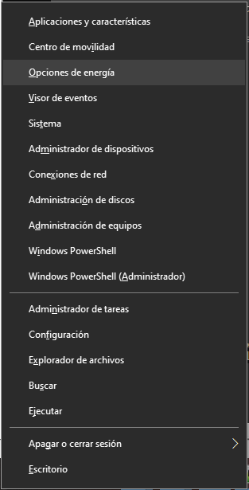
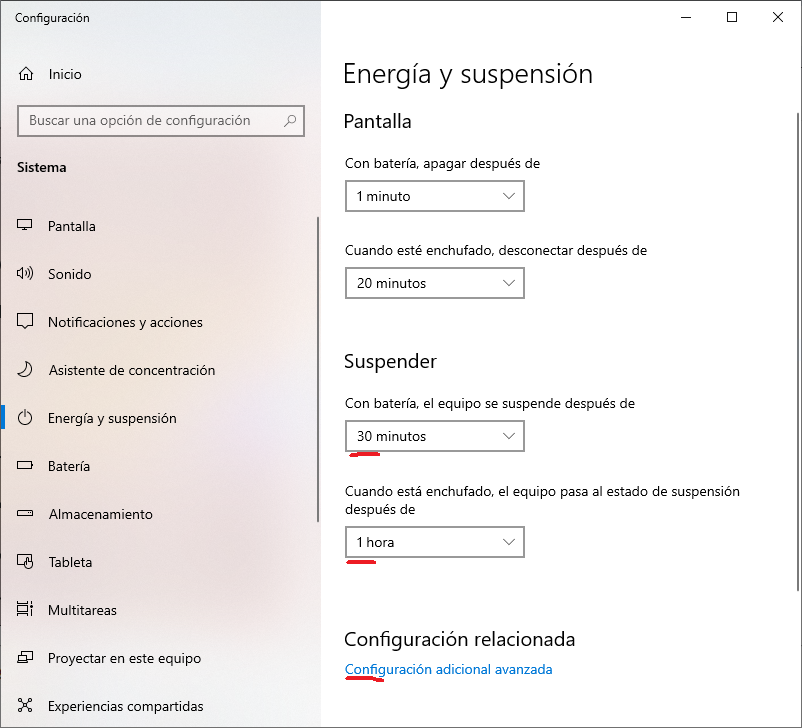
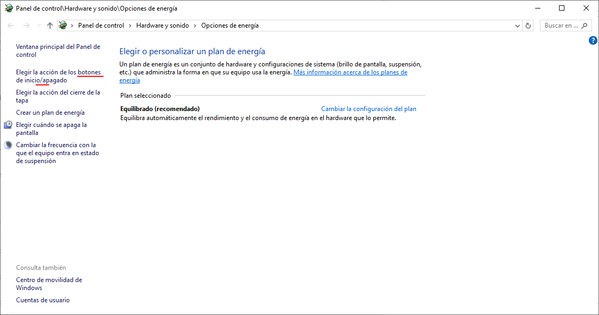
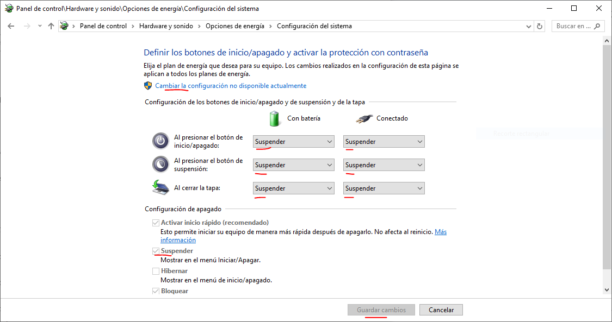

Al finalizar la instalación de Windows en este equipo, puede presentarse un problema de pantalla vacía al reiniciar.
Preferiblemente, durante la instalación, antes de reiniciar, ejecute lo indicado en Sección B
Si no es posible, y al reiniciar se presenta una pantalla vacía, ejecute lo indicado en Secciones A y B.
Presione "ctrl+x" para mostrar menú de windows
Presione "o" para Opciones de Energía
Presione "tab" dos veces para poner el foco en "Suspender - Con batería (...)".
Presione más de 10 veces "flecha-arriba" para establecer el valor "1 minuto"
Presione "tab" una vez para poner el foco en "Suspender - Cuando está enchufado (...)".
Presione más de 10 veces "flecha-arriba" para establecer el valor "1 minuto"


Presione "ctrl+x" para mostrar menú de windows
Presione "o" para Opciones de Energía
Presione "Configuración Avanzada (...)".
Presione "Asignar acción de botones de encendido/inicio (...)".
Presione "Cambiar la configuración no disponible actualmente".
En todas las configuraciones de botones (total 6), asigne "Suspender".
En "Configuración Apagado - Suspender", activar casilla "Mostrar en Menú Inicio/Apagar".
(Imágenes de sección anterior son también aplicables aquí)


All rights reserved.
Last update: 2024-08-17 19:00 GMT-04:00